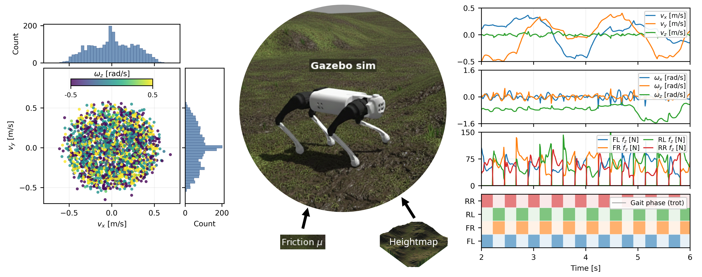
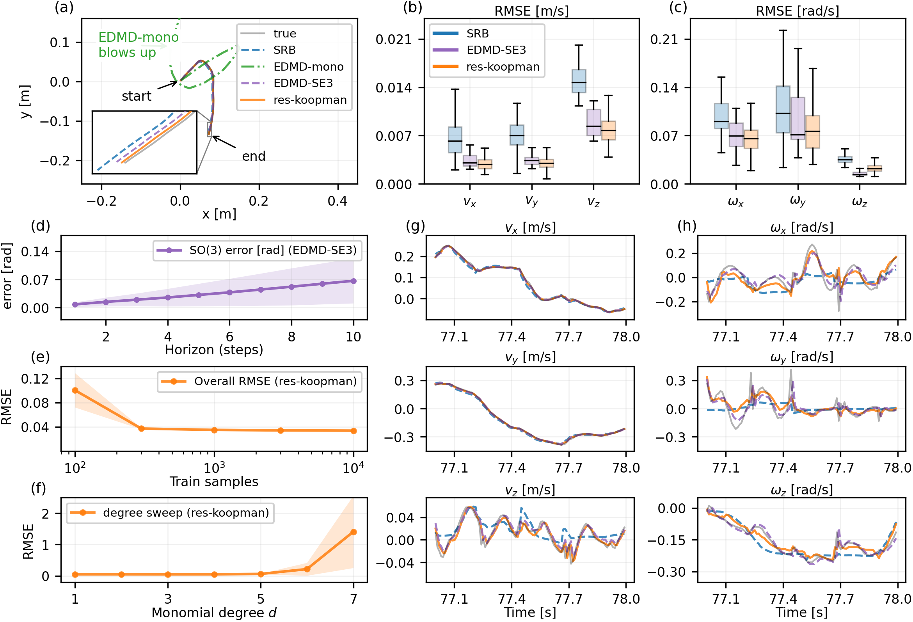
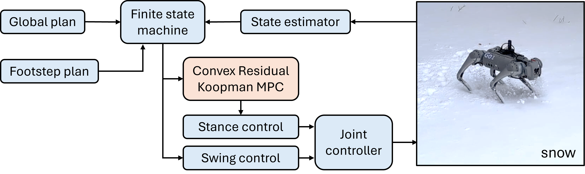

RK-MPC: Residual Koopman Model Predictive Control for Quadruped Locomotion in Offroad Environemnts
1 Department of Mechanical Engineering, Clemson University
Key Contributions
- Residual Koopman model: A Koopman-based data-driven framework that learns a compact linear residual correction on top of a nominal template model, along with formal guarantees on multi-step prediction error through bounded residual dynamics.
- Convex RK-MPC: A MPC formulation that embeds the learned residual predictor within a receding-horizon controller and runs onboard in real time at 500 Hz.
- Validation in simulation and hardware: Extensive Gazebo simulations and Unitree Go1 experiments demonstrating reliable tracking of planar velocity commands and robust blind locomotion across contact disturbances, multiple gait schedules, and off-road terrains (grass, gravel, snow, and ice).
Abstract
This paper presents Residual Koopman MPC (RK-MPC), a Koopman-based, data-driven model predictive control framework for quadruped locomotion that improves prediction fidelity while preserving real-time tractability. RK-MPC augments a nominal single-rigid-body template model with a compact linear residual predictor learned from data in lifted coordinates, enabling systematic correction of model mismatch caused by contact variability and rough terrain.
The learned residual model is embedded within a convex quadratic program MPC formulation, yielding a receding-horizon controller that runs onboard at $500\,\mathrm{Hz}$ and retains optimization-based constraints. We evaluate RK-MPC in Gazebo simulation and Unitree Go1 hardware experiments, demonstrating reliable blind locomotion across disturbances, gait schedules, and off-road terrain (grass, gravel, snow, ice).
We further compare against Koopman/EDMD baselines using monomial and SE(3)-structured observables, showing the residual correction improves multi-step prediction and closed-loop performance while reducing sensitivity to observable choice.
Residual Koopman Model Identification
Dataset Generation
Training data were generated in Gazebo with a nominal locomotion controller over $10$ independent episodes (≈2 min each) at $100\,\mathrm{Hz}$, yielding $N=121{,}753$ synchronized samples after transient removal. Each episode used randomized terrain and friction ($\mu\in[0.5,1.0]$) and uniformly randomized planar velocity commands $v_x,v_y\in[-0.7,0.7]~\mathrm{m/s}$, $\omega_z\in[-0.5,0.5]~\mathrm{rad/s}$, filtered for smooth references.
The dataset coverage is shown in the figure below with sampled velocities, reference commands, GRFs, and trot gait schedule; it supports robust residual Koopman fitting and sim-to-real generalization.

Training dataset coverage for residual Koopman training and evaluation.
Prediction Performance
For the Residual Koopman model identification, we construct residual targets $e_k=[\Delta v_k^\top\;\Delta\omega_k^\top]^\top\in\mathbb{R}^6$, and lift them via degree-2 monomials $z_k=\psi(e_k)$, and use EDMDc to estimate $(A^{\mathrm{res}},B^{\mathrm{res}})$ with output regression for $C^{\mathrm{res}}$. The learned correction is projected back to physical residual space as $e_k\approx C^{\mathrm{res}} z_k$, preserving a lightweight structure around the SRB predictor.
- Residual Koopman model achieves low multi-step prediction error: open loop RMSE of $0.033\pm0.0028$ m/s for velocity and $0.033\pm0.0027$ rad/s for angular velocity.
- Residual Koopman model is highly sample efficient: RMSE improves from $0.3759\pm0.1385$ at 100 samples to $0.0403\pm0.0046$ at 1000, saturating near $0.033$ at 10,000 samples.
- Monomial EDMD (EDMD-mono) has large error growth, while EDMD with SE(3) basis (EDMD-SE3) and Residual Koopman (res-koopman) models perform better than the SRB template model in open loop predictions.
- EDMD with SE(3) basis leads to small orientation errors that perturb the lifted coordinates and compound over multi-step rollouts, leading to horizon-dependent attitude drift.
The figure below compares trajectory predictions and per-channel RMSE, and shows sample-count and polynomial-degree sweep behaviors for the residual Koopman correction.

Residual Koopman vs EDMD & SRB models prediction performance and RMSE analysis (open loop).
Residual Koopman MPC Formulation
Given lifted residual state $z_k = \psi(e_k)$, residual correction $C^{\mathrm{res}}$, and nominal dynamics $(A^{\mathrm{nom}},B^{\mathrm{nom}})$, the MPC problem is:
\[ \begin{aligned} \min_{\{u_{k+i}\}_{i=0}^{N_h-1}} \quad & \sum_{i=0}^{N_h-1} (x_{k+i}-x^\star_{k+i})^\top Q (x_{k+i}-x^\star_{k+i}) + u_{k+i}^\top R u_{k+i} \\ &\quad + (x_{k+N_h}-x^\star_{k+N_h})^\top Q_f (x_{k+N_h}-x^\star_{k+N_h}) \\ \text{s.t.} \quad & x_{k+i+1} = A^{\mathrm{nom}}_{k+i} x_{k+i} + B^{\mathrm{nom}}_{k+i} u_{k+i} + C^{\mathrm{res}}(A^{\mathrm{res}} z_{k+i} + B^{\mathrm{res}} u_{k+i}) \\ & z_{k+i} = \psi(e_{k+i}),\qquad e_{k+i} = \begin{bmatrix}v_{k+i}-v^{\mathrm{nom}}_{k+i}\\ \omega_{k+i}-\omega^{\mathrm{nom}}_{k+i} \end{bmatrix} \\ & A_{ineq}(\sigma_{k+i}) u_{k+i} \le b_{ineq}(\sigma_{k+i}) \end{aligned} \]

RK-MPC framework diagram used in the control architecture.
We validate Residual Koopman MPC (RK-MPC) on Unitree Go1 hardware in blind-locomotion conditions (no exteroceptive sensing), using only proprioception and commanded planar references.
- Compute platform: full control stack runs onboard an NVIDIA Jetson Xavier NX.
- Control law: at each cycle, RK-MPC solves the convex Q with the residual Koopman model, then applies the first optimal command $u_k^\star$.
- Reference generation: user commands $(v_x^{\mathrm{cmd}},\,v_y^{\mathrm{cmd}},\,\omega_z^{\mathrm{cmd}})$ are converted by a smooth global planner into a reference sequence $\{x_{k+i}^\star\}_{i=0}^{N}$ for the center of mass of the robot.
- Estimation and locomotion stack: SRB state $x_k$ from a linear Kalman filter; contact timing from a wave-based gait scheduler; swing footholds from a Raibert-style heuristic.
- Rates: estimator and RK-MPC run at $500\,\mathrm{Hz}$; stance and swing torque control also runs at $500\,\mathrm{Hz}$; MPC discretization step is $0.01\,\mathrm{s}$.
RK-MPC Simulation
RK-MPC is able to reliably track a circle of unit radius and a figure-8 maneuver over 10 laps with command velocity 0.5 m/s.